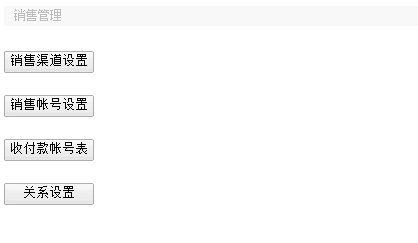
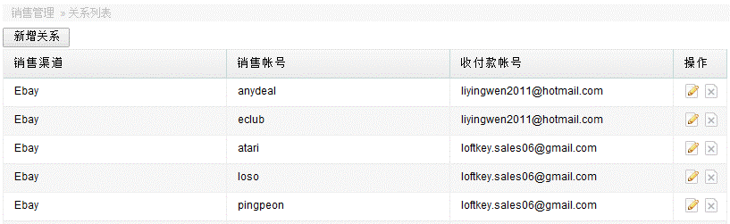
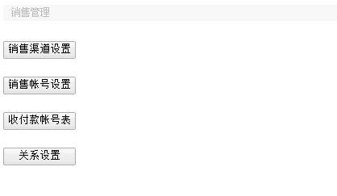
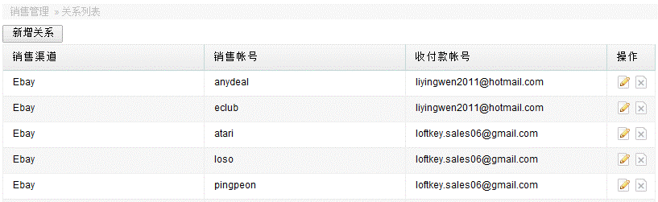

销售管理
进入财务管理—>销售管理，设置销售相关的信息，如渠道，帐号，关联设置等。

进入销售渠道模块，可进行相关信息的增加，修改和删除。

其他销售帐号，收付款帐号的增删改操作与渠道的类似。
关系设置为优先配比功能，以销售帐号为主导，表示某个销售帐号平时的收款是在哪个银行帐号，同时对应哪个销售渠道。

进入财务管理—>销售管理，设置销售相关的信息，如渠道，帐号，关联设置等。

进入销售渠道模块，可进行相关信息的增加，修改和删除。
其他销售帐号，收付款帐号的增删改操作与渠道的类似。
关系设置为优先配比功能，以销售帐号为主导，表示某个销售帐号平时的收款是在哪个银行帐号，同时对应哪个销售渠道。
